Industrial AI · Computer vision · Robotics
Victor Barreto Andrade Gonçalves
Computer Engineering student, SENAI CIMATEC University (Brazil)
I build AI that works on real systems: computer vision on an autonomous inspection robot, deep learning on a GPU cluster, AI agents deployed with safety checks and fallback logic, and a simulated cobot sorting cell that rebuilds the four modules of the BRICS Hi-Tech competition for Industrial AI Solutions.
- BRICS Hi-Tech Skills Camp 2026 — Industrial AI Solutions
- HACKaSTONE 2026 Grand Finalist
- Lead-author paper accepted — AI for Education NL 2026
- 6th — AWS DeepRacer National Final
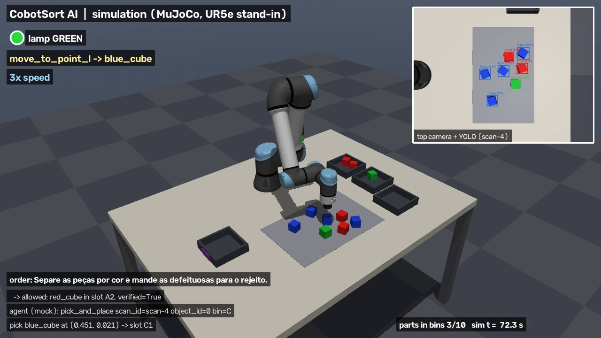
Featured project
CobotSort AI — simulated collaborative-robot sorting cell
I built it after the BRICS Hi-Tech Skills Camp to practice every module of the competition end to end, and I report the results in the camp's judging order: safety, degree of automation, precision, speed.
A 6-axis cobot with a vacuum gripper sorts colored cubes into bins. The UR5e model stands in for the ARM95 used in the camp (same class: 6 axes, 5 kg payload). Purple cubes are defects and go to a reject bin. Everything runs in simulation; no number here comes from real hardware.
Simulation YOLO detector, 20 automatic episodes, 176 cubes
- 0unplanned contacts
- 10/10unsafe requests blocked
- 0%parts in the wrong bin
- 0.91 mmmean placement error
- 0.991detector mAP@50 under lighting never seen in training
The four competition modules, rebuilt
-
Module AGUI, semi-automatic sorting
PyQt6 operator GUI: pick a detected part and a bin, then execute. Manual jog in joint and Cartesian space, vacuum on/off, home.
-
Module BAutomatic sorting
Park the arm, scan, detect, pick nearest-first, place, re-scan to verify the result; repeat until no sortable part is left.
-
Module VTrain AI object detection
YOLO11n trained only on synthetic images, labeled automatically from segmentation renders, with randomized lighting, colors, camera pose and distractors.
-
Module GIntegrate the AI
Detections become table coordinates through a pinhole camera model and drive the pick-and-place.
Pipeline
- Top camera + YOLO11n
- Pixel → world
- Sorter or operator agent
- Safety guard
- Robot API
move_to_point_j/move_to_point_l,tool_on/tool_off - UR5e cobot in MuJoCo
Results
Simulation Benchmark: 20 automatic episodes and 176 cubes per detector. Columns follow the camp's judging order: safety, degree of automation, precision, speed.
| Safety | Degree of automation | Precision | Speed | |||
|---|---|---|---|---|---|---|
| Detector | Unplanned contacts | Unsafe requests blocked | Sorted without operator | Wrong bin | Placement error mean / p95 | Sim. time per cube |
| Oracle (ground truth) | 0 | 10/10 | 97.2% | 0% | 0.08 / 0.18 mm | 24.0 s |
| HSV (classical) | 0 | 10/10 | 97.2% | 0% | 1.30 / 1.90 mm | 24.0 s |
| YOLO11n (mine) | 0 | 10/10 | 97.2% | 0% | 0.91 / 1.29 mm | 24.0 s |
The 2.8% not sorted are 5 cubes whose bin was already full (4 slots per bin); the cell leaves them in place and flags them for the operator.
Source: results/benchmark.md
Detector: YOLO11n vs. a classical HSV baseline
| Detector | Test set | Precision | Recall | mAP@50 | Localization error mean / p95 | CPU time |
|---|---|---|---|---|---|---|
| HSV | Synthetic test (120 images) | 1.000 | 0.977 | 0.992 | 1.64 / 3.93 mm | 2.1 ms |
| HSV | Hard lighting, never seen (150) | 0.989 | 0.927 | 0.942 | 1.97 / 5.42 mm | 2.1 ms |
| YOLO11n | Synthetic test (120 images) | 1.000 | 0.998 | 1.000 | 1.45 / 1.65 mm | 22.1 ms |
| YOLO11n | Hard lighting, never seen (150) | 0.989 | 0.978 | 0.991 | 1.38 / 2.37 mm | 21.8 ms |
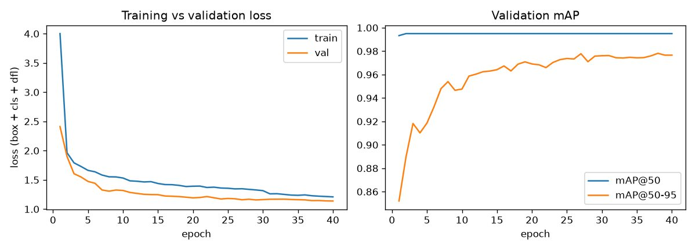
Source: results/perception.md
Kinematics, as taught in the camp
- Forward kinematics with DH parameters: checked against the simulator on 50 random configurations; 0.80 mm RMS position error with Universal Robots' published DH table.
- Inverse kinematics (damped least squares, several starting points): 100 of 100 reachable targets solved with error below 0.01 mm, on average 7.5 different joint solutions per target. An unreachable target returns no solution.
- Singularities: motions are blocked when the manipulability index drops below half the lowest value seen in normal operation (calibrated on 22,386 samples).
Same pattern as EduBot: the AI decides what, deterministic code decides how and whether it is safe. 10 of 10 test orders in Portuguese and English passed, including refusing a bin that does not exist, asking back on ambiguous orders and stopping on “pare”. Measured with the deterministic provider; the Claude provider uses the same tools and guardrails.
Gallery
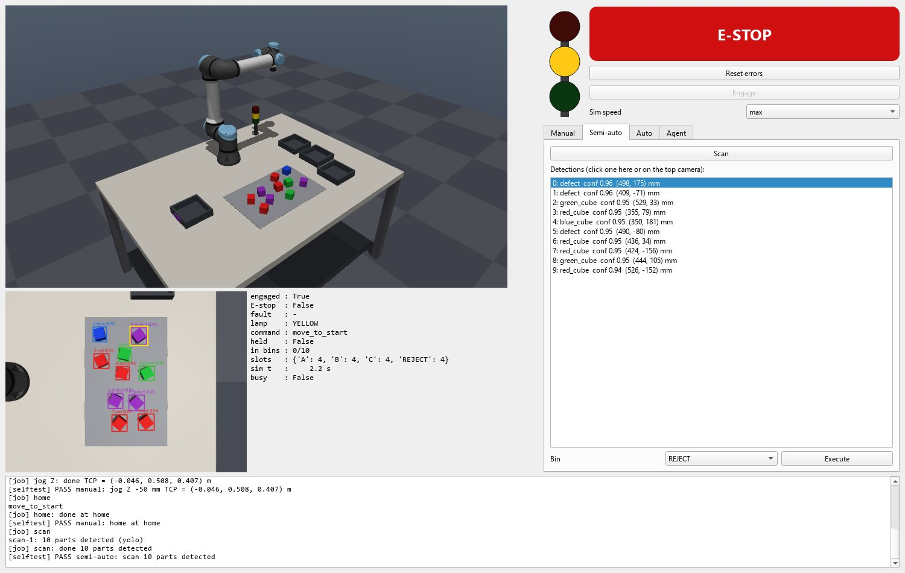
Semi-automatic mode: the operator picks a detected part and a bin. 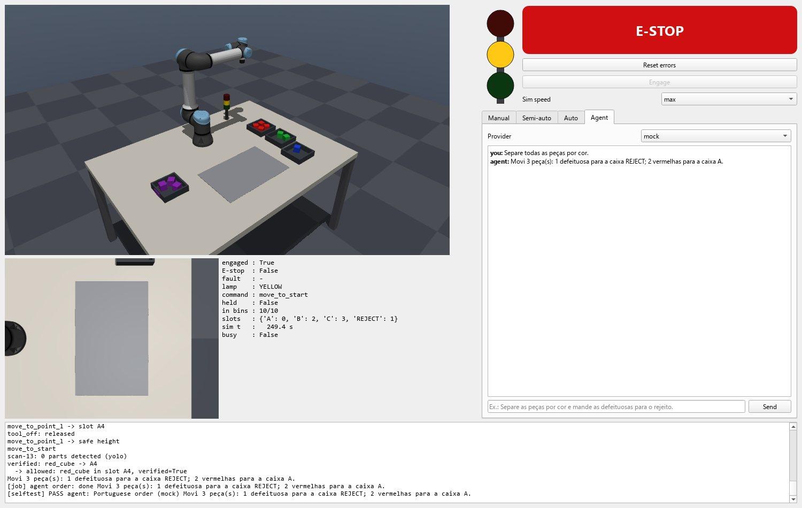
Agent tab: a Portuguese work order, executed and summarized. 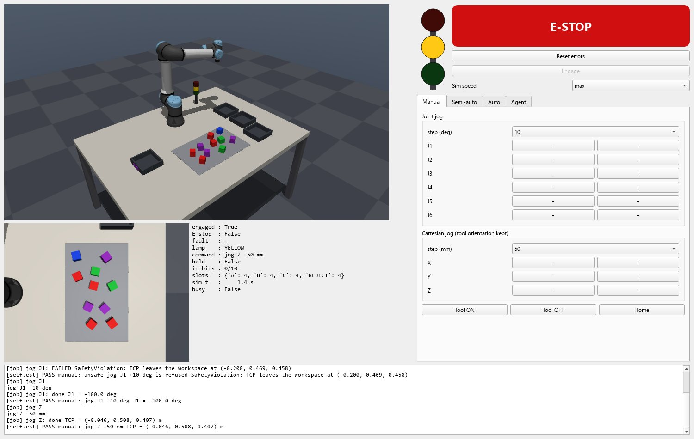
Manual jog in joint and Cartesian space; unsafe jogs are refused. 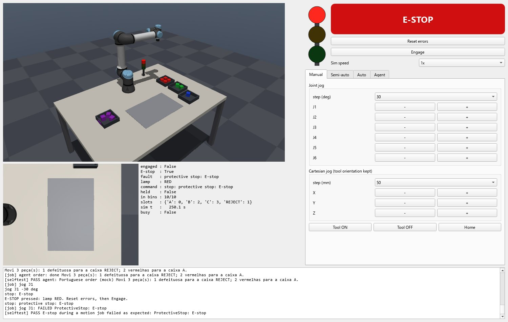
E-stop: lamp RED, then Reset errors → Engage, as in the camp's GUI. 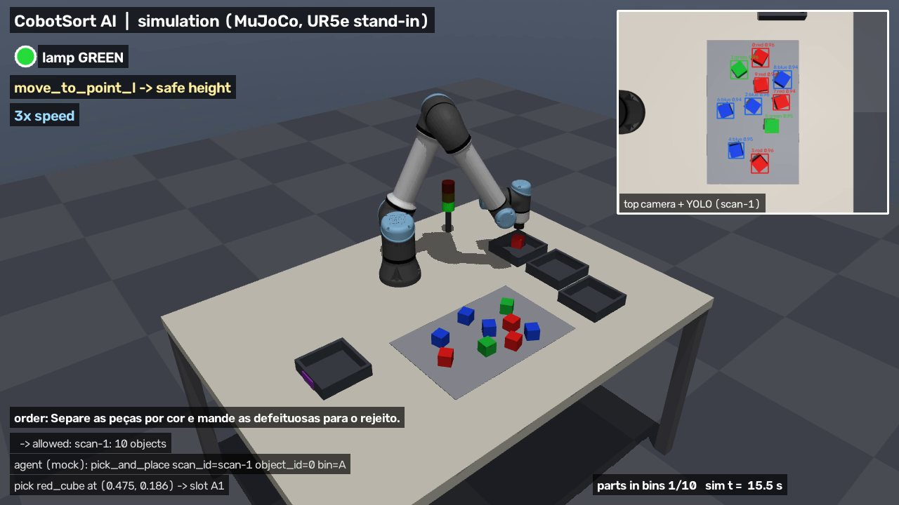
Early in the run: first part placed, the arm rises to a safe height with move_to_point_l.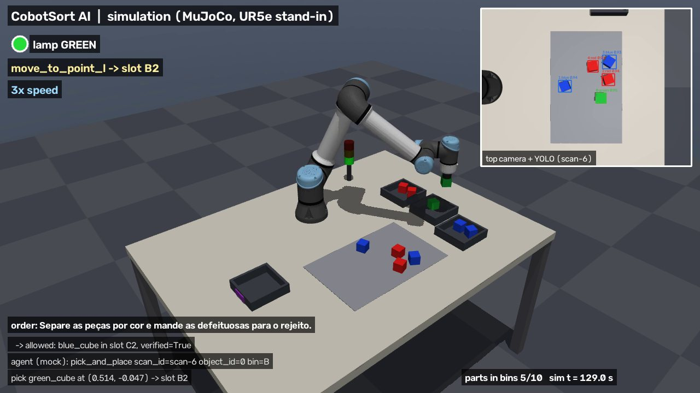
Mid-run: placing a part into slot B2 (5 of 10 parts sorted). 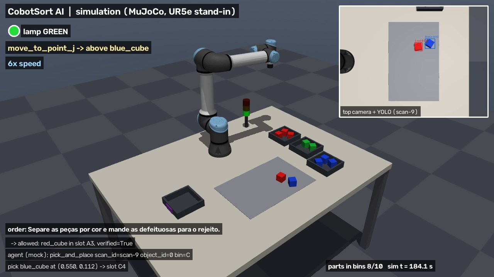
Late in the run: 8 of 10 parts already in their bins. 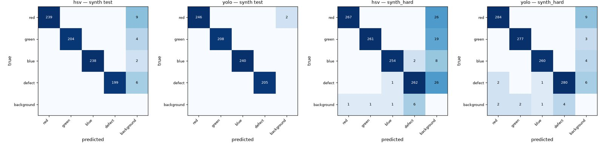
Confusion matrices of both detectors on the normal and hard-lighting test sets.


Skills Camp topics → code
| Camp block | Topic | In CobotSort |
|---|---|---|
| Collaborative robotics | Degrees of freedom, forward kinematics with DH parameters | kinematics/dh.py |
| Inverse kinematics (several solutions or none) | kinematics/ik.py | |
| Singularities and the manipulability index | kinematics/manipulability.py, safety/guard.py | |
| Dynamics: τ = M(q)·q'' + C(q, q')·q' + G(q) | cobotsort diag | |
| Cobot safety: E-stop, signal lamp, reduced speed | safety/ | |
| Programming and control | MoveJ vs. MoveL and the pick-and-place sequence | motion/, robot/api.py |
| Python OOP: abstract classes, dataclasses, exceptions | robot/backend.py, perception/detector.py | |
| Threads and Lock (GUI responsive while the robot moves) | gui/app.py | |
| Git flow | one branch per milestone, --no-ff merges, tags v0.0–v0.7 | |
| Neural networks | HSV thresholds, morphology, contours | perception/hsv.py |
| CNN/YOLO, labeling, train/val/test, augmentation, overfitting, precision/recall/mAP | perception/ |
Project
EduBot — AI agent for personalized learning
It is an AI agent working inside a real system: it acts through controlled tools, its inputs are validated, a rule-based fallback takes over if the model fails, and high-impact actions wait for human approval. CobotSort's operator agent reuses this design.
- HACKaSTONE 2026 Grand Finalist
- Lead-author paper accepted — AI for Education NL 2026
Grand Finalist of HACKaSTONE 2026, a global contest on AI for education (Grand Final in Amsterdam). Lead-author paper on EduBot accepted at the Conference AI for Education The Netherlands 2026.
The data loop: student behavior feeds the AI
- The student studiesReads, watches the video, listens to the podcast, takes the quiz.
- The platform tracksReading time, scroll %, video %, every quiz attempt with time.
- One student profileError rate per competency, days inactive, preferred format.
- The agent decidesClaude reads the profile, finds the weakest competency, queries tools.
- Tailored reinforcementA new study path in the preferred format, plus a quiz.
Feedback: what the student does with the reinforcement becomes new data and rewrites the profile
What I did
- Led the 8-person team as project lead and tech lead: defined the architecture and integrated back end, front end and AI layer.
- Tool-use loop on the Anthropic API (Claude via AWS Bedrock) behind an interchangeable provider layer (mock / Bedrock / direct API), with four controlled tools and a rule-based fallback.
- Guardrails: the student's identity comes only from the session token; record IDs are validated before any tool runs.
- Python/Flask REST API with 67 endpoints, MySQL with 31 tables, React + TypeScript front end, Docker Compose, 332 automated tests.
Gallery
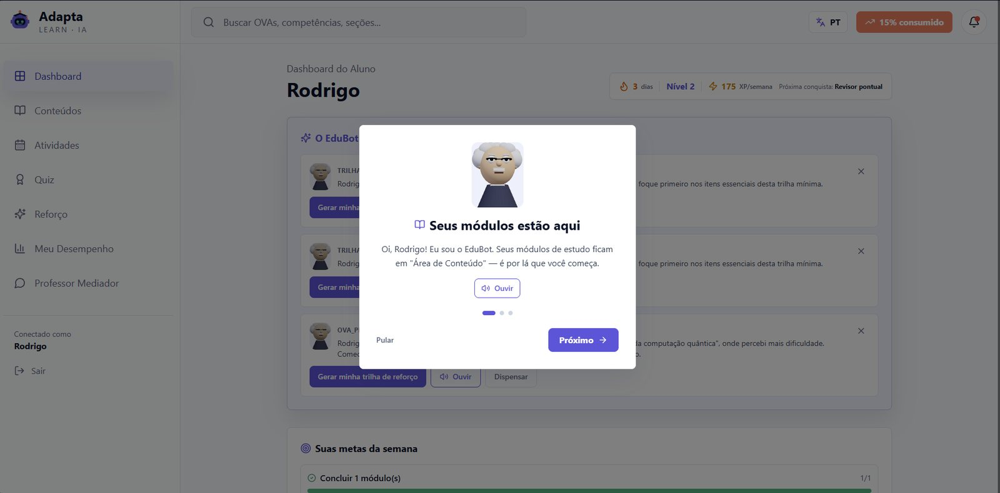
Student dashboard: EduBot welcomes the student and proposes reinforcement paths. 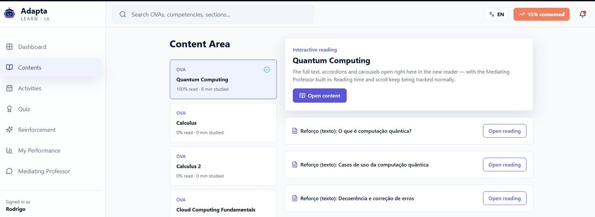
Content area: reading progress is tracked, and reinforcement texts appear for the weak topic. 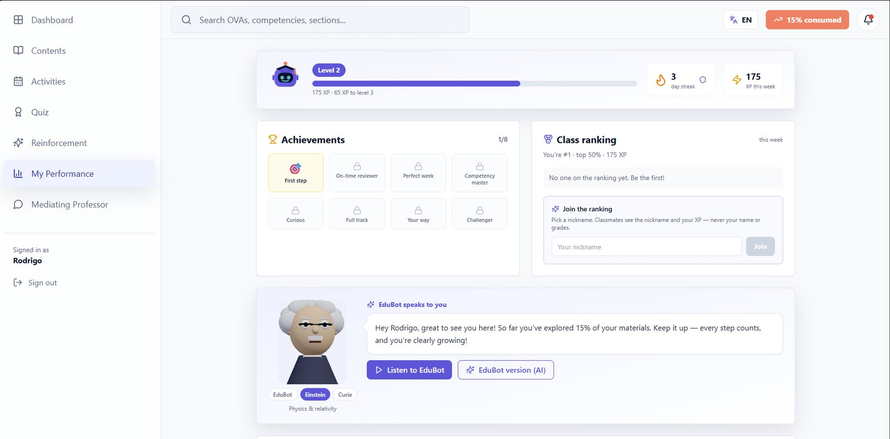
Progress page: level, achievements, class ranking by nickname, and the EduBot avatar.


Project
Leak Track — autonomous industrial inspection robot
It is industrial AI on real hardware: a neural network reads a camera on a robot, and the result drives an inspection task in places that are dangerous or hard to reach for people.
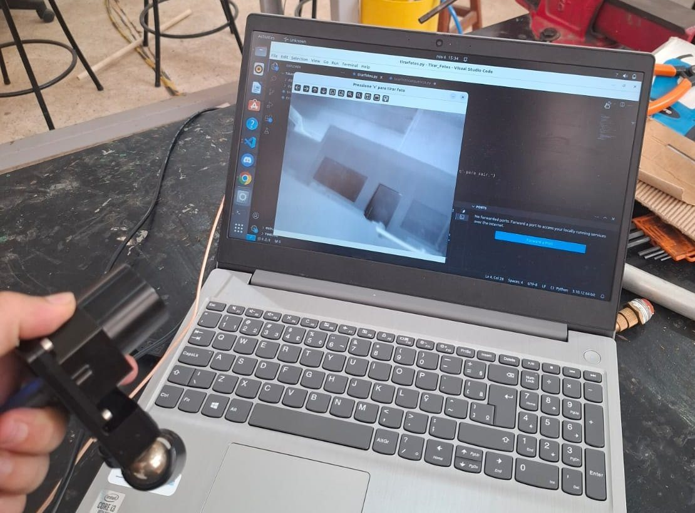
In the lab: collecting thermal images for the dataset with the thermal camera (in hand) and our Python capture script (on screen). 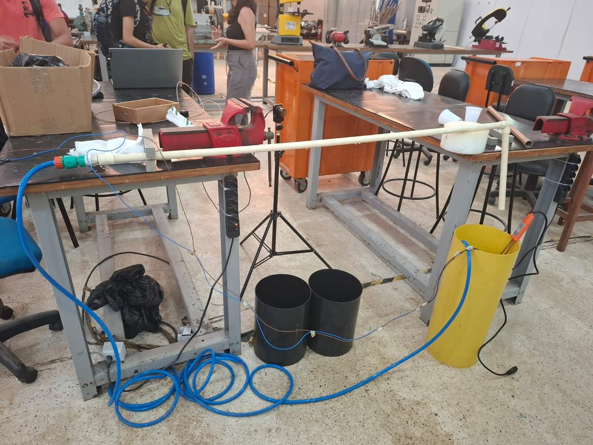
Test bench in the lab: a PVC pipe fed by a water hose and held between two vises, with the camera on a tripod in front of it. 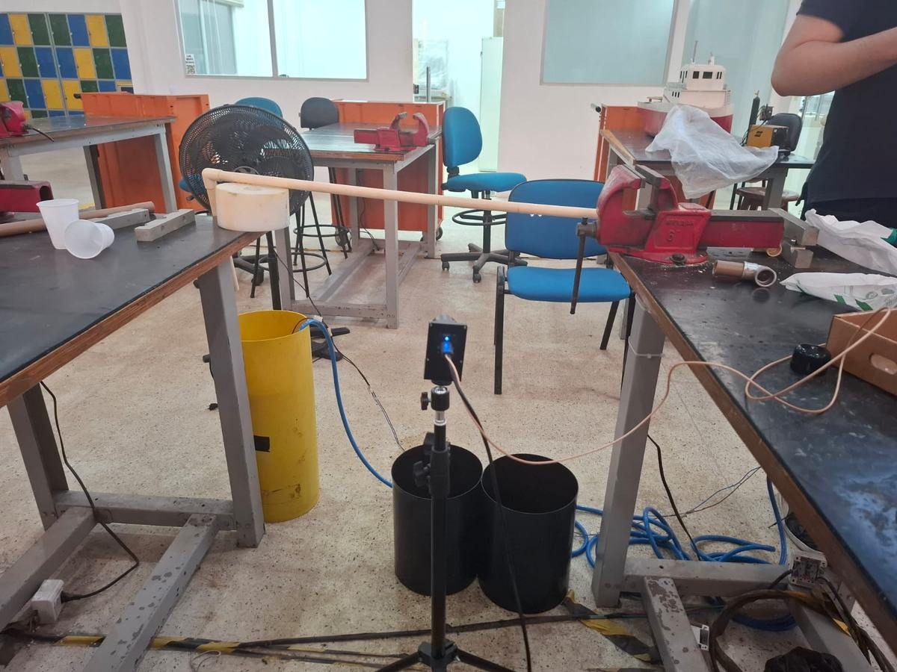
From behind the camera: the tripod-mounted camera aimed at the pipe on the test bench.


Pipeline
- Thermal cameraFLIR camera on the robot
- Python + OpenCVCapture and preprocessing of thermal frames
- CNNFinds temperature changes linked to leaks
- ROS 2Moves the robot to inspect the structure
- Co-developed, as a trainee, a robot that detects leaks in industrial structures: ROS 2 control, Python and OpenCV image processing, and CNNs on FLIR thermal images to find temperature changes linked to leaks in real time.
- Ran the thermal-image capture experiments shown above to build the dataset.
More projects
-
Chest X-ray diagnosis with CNNs
Guided a multidisciplinary team that built a CNN separating healthy lungs from pneumonia and tuberculosis cases, from data curation and validation to a results interface. Next stage: object detection (Faster R-CNN) on the RSNA dataset.
-
AWS DeepRacer — reinforcement learning
Trained reinforcement learning models for an autonomous race car. 6th place in the Brazilian National Final (CSBC 2025) and 3rd place in the Northeast semifinal.
-
HPC internship
Deep learning (PyTorch, TensorFlow) for molecular simulation and drug discovery, trained on a SLURM-managed GPU cluster with parallel jobs and GPU allocation.
-
CatchNet — decision support for power distribution networks
Specification and prototype of an application that helps electricity utilities manage non-technical losses (energy theft and fraud). Consumer units are ranked by risk so field teams inspect the right places first; designed to plug in a machine learning model that scores theft probability.
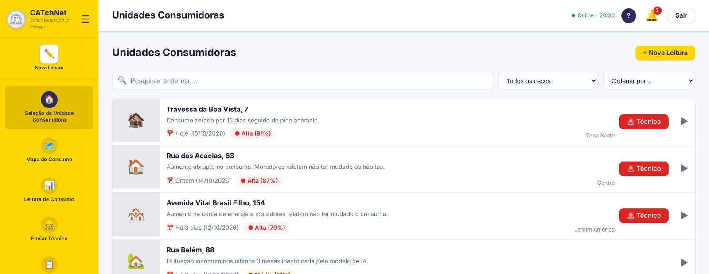
CatchNet prototype (Portuguese interface): consumer units sorted by risk, with one-click dispatch of a field technician.

Publications
-
Lead author
“What Instantiation Reveals: Building an Agentic Remediation Loop on Top of a Conceptual Model for AI-Enhanced Virtual Learning Environments.” Accepted for presentation at the Conference AI for Education The Netherlands 2026, Amsterdam.
The paper presents EduBot as the instantiation of the model.
-
Co-author
Vilas Boas JB, Rodrigues RSC, Gonçalves VBA, Silva YQJ, Johnsson MLN, Lima CSPC. “CatchNet: Specification and Prototyping of a Decision-Support Application for Non-Technical Loss Management in Power Distribution Networks.”
Poster, SIINTEC 2026 (International Symposium on Innovation and Technology, SENAI CIMATEC).
Experience
-
High Performance Computing (HPC) Intern
Oct 2025 – presentSENAI CIMATEC, Salvador
Deep learning (PyTorch, TensorFlow) to speed up molecular simulations and predictive models for drug discovery; training on a SLURM GPU cluster; data processing with Python, pandas and SQL.
-
Treasurer (earlier: Trainee, Project Advisor)
Mar 2024 – present (volunteer)IEEE Robotics and Automation Society, Student Chapter
Budget planning and fundraising through IEEE grants and sponsors. Trainee on Leak Track (2024); Project Advisor of the X-ray project (2025–2026).
-
Google Student Ambassador
Aug 2026 – present (volunteer)Google, SENAI CIMATEC campus
Designed and ran an AI competition on Google Skills during SEMCOMP 2026: participants built prototypes in Google AI Studio and earned an official badge.
-
AWS Student Builder Group Leader (formerly Cloud Club Captain)
Nov 2025 – Jul 2026 (volunteer)Amazon Web Services, SENAI CIMATEC campus
Led the campus cloud community with workshops on AWS and AI.
-
Teaching monitor and problem setter
Nov 2024 – present (volunteer)Competitive Programming Club, SENAI CIMATEC
Taught C++ algorithms; the club's 4 teams placed 2nd, 5th, 8th and 11th of 22 at the regional ICPC-format contest. Problem setter for the 2nd Cimatec Computing Olympiad (OCC), October 2026.
Education
SENAI CIMATEC University, Salvador, Brazil — B.Eng. Computer Engineering (5-year program), January 2024 – December 2028 (expected); currently 3rd year.
BRICS Hi-Tech Skills Camp 2026 — Development and Implementation of Industrial AI Solutions (September 21–23, 2026, online): collaborative robotics, robot programming and control, neural networks.
Certifications: Microsoft Certified: Azure AI Fundamentals; EF SET English Certificate (C2 Proficient).
Awards and selections
- Grand Finalist — HACKaSTONE 2026, global contest on AI for education (Grand Final in Amsterdam).
- 6th place, National Final — AWS DeepRacer, CSBC 2025; 3rd place in the Northeast semifinal.
- 2nd place of 22 teams, Salvador site — Brazilian Programming Marathon of the Brazilian Computer Society (SBC, ICPC sub-regional), 2026; Honorable Mention in 2024 and 2025.
- 1st place — SEMCOMP 26 Programming Marathon, Federal University of Bahia (UFBA), 2026.
- 3rd place in Bahia — 1st Northeastern Brazil Programming Contest (ICPC format), 2026.
- 2nd place — Scientific Article Competition, Researcher Challenge Seminar (Seminário Desafio Pesquisador), SENAI CIMATEC.
- 1 of 28 students selected in Brazil — 9th HackLab FNESP 2026, innovation marathon (Semesp).
- Selected by Google (Student Ambassador 2026) and by AWS (Student Builder Group Leader 2025–2026).
Skills
| Area | Skills and tools | Where I used them |
|---|---|---|
| Collaborative industrial robotics | ARM95 cobot programming (waypoints, joint and linear moves, vacuum tool); forward and inverse kinematics; DH parameters; singularities; cobot safety; MuJoCo simulation | CobotSort; Skills Camp 2026 |
| Programming and control | Python, C++, SQL, TypeScript; ROS 2; Git, GitHub, GitLab; REST APIs (Flask); user interfaces (PyQt6, React) | CobotSort; Leak Track; EduBot |
| Neural networks and computer vision | PyTorch, TensorFlow, Keras; CNNs; OpenCV; thermal imaging (FLIR); object detection (YOLO, Faster R-CNN); data augmentation; precision, recall, mAP | CobotSort; Leak Track; X-ray project; HPC internship |
| AI implementation and deployment | Docker, Linux, GPU clusters (SLURM), AWS; LLM agents with tool use; guardrails and fallback logic; automated testing | CobotSort; EduBot; HPC internship |
Contact
- Emailvictorba.goncalves@gmail.com
- Phone+55 71 98831-5880
- LinkedInVictor Barreto Andrade Gonçalves
- GitHubVictorBarretoAndrade
- LocationSalvador, Bahia, Brazil